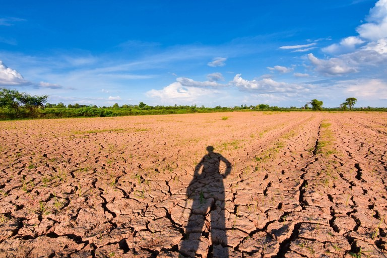

Noticias Cidades
Ultimas notícias do Brasil
Prejuízo com a seca nas lavouras sobe para R$ 25,6 bi e Paraná pede ajuda federal
O prejuízo com a quebra da safra paranaense provocada pela longa estiagem está aumentando e já chega a R$ 25,6 bilhões, considerando apenas as principais lavouras – soja, milho e feijão. Na soja, a quebra em média no estado é de 39%; no milho, 36%; e no feijão, 30%. Na região Oeste, a situação é mais crítica, chegando a 60% de perda. Os dados são do Departamento de Economia Rural, da Secretaria da Agricultura. A situação levou o governo do Paraná a pedir ajuda ao governo federal. Um documento assinado pelo secretário da Agricultura, Norberto Ortigara, foi encaminhado na última terça-feira (18), à ministra da Agricultura, Pecuária e Abastecimento, Tereza Cristina. Os principais pedidos são: auxílio emergencial para que os agricultores possam liquidar dívidas, linha emergencial de crédito de custeio para plantio da segunda safra de milho, mais agilidade nas vistorias para análise e liberação das áreas para plantio e do seguro rural e distribuição de sementes para os agricultores que não têm condições de adquirir ou produzir a semente para o plantio da nova safra. O documento foi elaborado em conjunto pela Secretaria da Agricultura, Instituto de Desenvolvimento Rural do Paraná (IDR-Paraná) e entidades representativas dos produtores rurais - Sistema Organização das Cooperativas do Paraná (Ocepar), Federação da Agricultura do Paraná (Faep) e Federação dos Trabalhadores Rurais Agricultores Familiares do Paraná (Fetaep). Em âmbito estadual, algumas medidas já foram tomadas, como a subvenção de juros para alguns investimentos e o fornecimento de capital para as mais de 170 cooperativas da agricultura familiar. “No entanto, essas ações são insuficientes frente aos estragos causados pela estiagem”, diz o documento encaminhado ao ministério. A ministra da Agricultura visitou a região Oeste do Estado no dia 13 de janeiro para conferir os efeitos da seca. A região é a mais afetada pela estiagem. A expectativa é que nos próximos dias o Ministério da Agricultura anuncie medidas para socorrer os agricultores, atendendo as reivindicações do governo do estado e das entidades representativas do setor.
Outras notícias do Brasil
-
Chuvas
O que as chuvas deste mês significam para os reservatórios e a conta de luz
-
Seca
Prejuízo com a seca nas lavouras sobe para R$ 25,6 bi e Paraná pede ajuda federal
-
Caminhões cegonha
DAF Caminhões Brasil começa a exportar veículos produzidos em Ponta
-
Fim do rodízio do PR
A Sanepar acertou ao decretar o fim do rodízio no abastecimento de água?